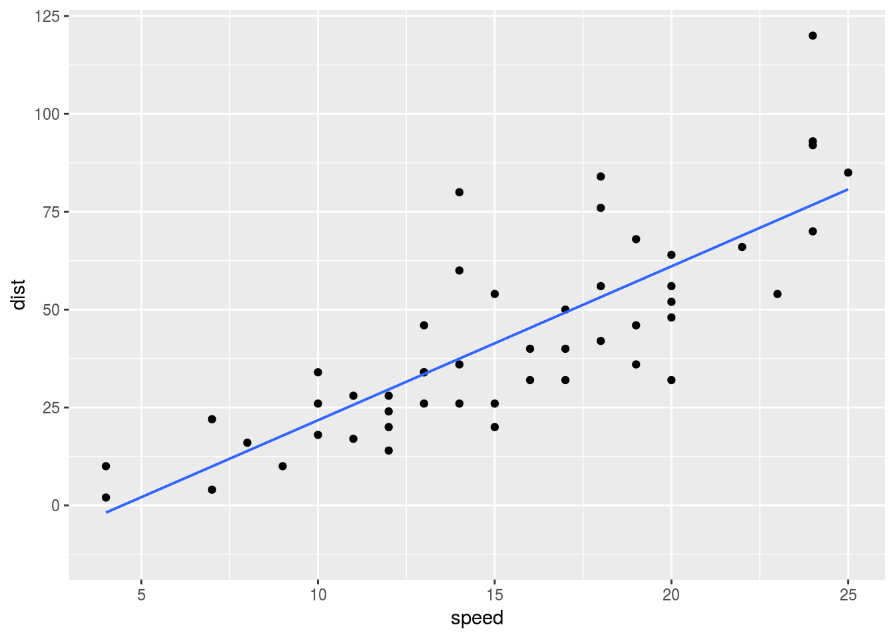
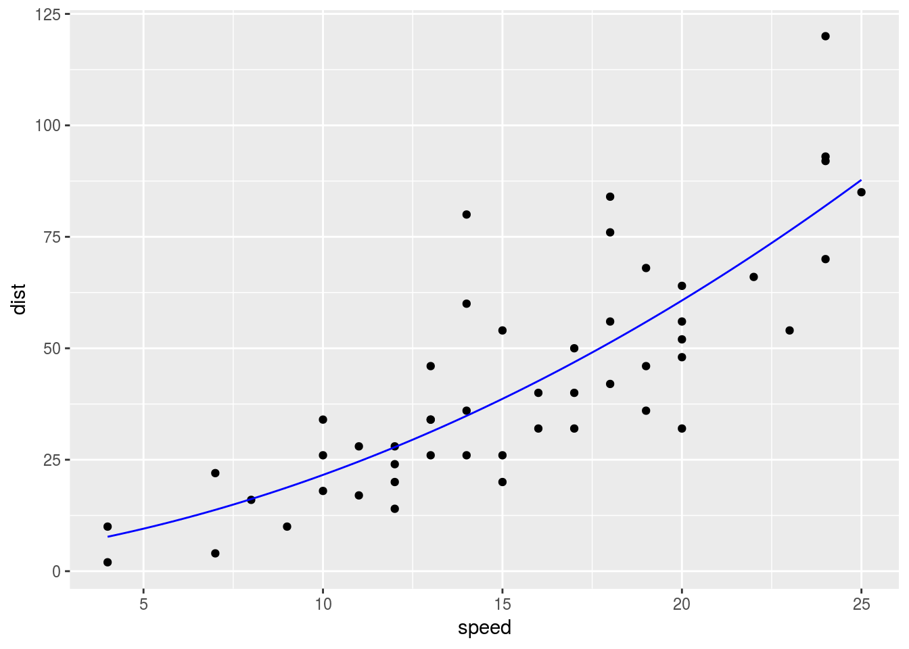
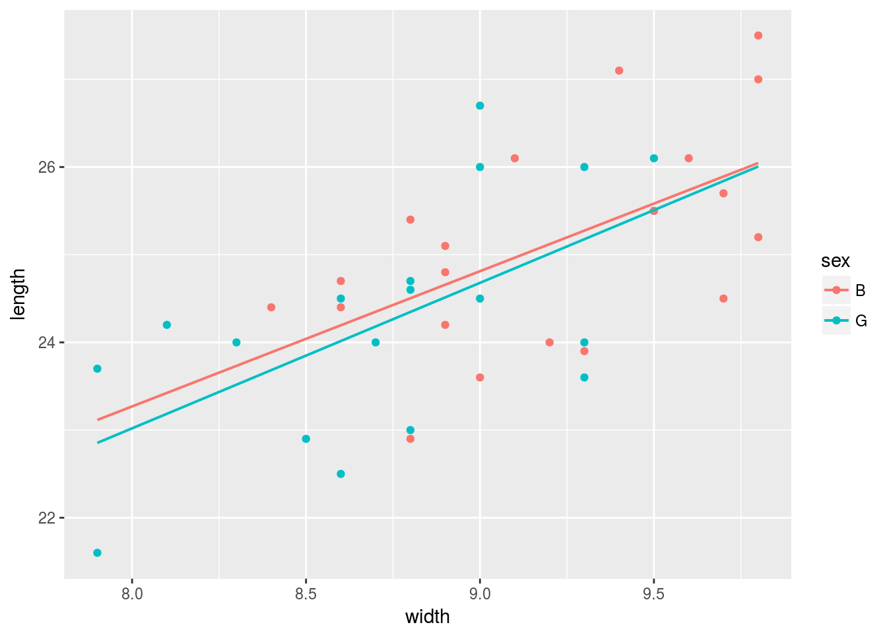
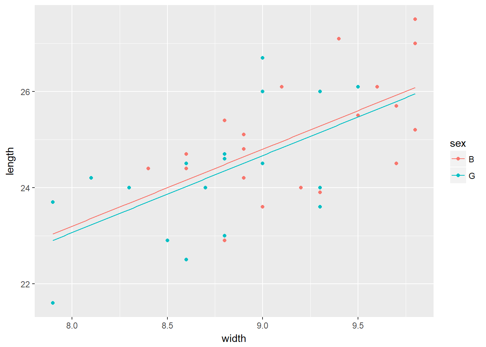

| itle: gf_point |
| uthor: Kenji Miyazaki |
| ate: ‘2017-08-05’ |
| lug: gf-point |
| ategories: |
| - R |
| ags: |
| - regression |
library(mosaic)散布図に回帰直線を加えた式は次のようにすればよい.
cars %>% gf_point(dist ~ speed) %>% gf_lm()
これは以下と同様である.
fn <- lm(dist ~ speed, data = cars) %>% makeFun()
cars %>% gf_point(dist ~ speed) %>% gf_fun(fn, color = 4)自乗項をつける場合には次のようにすればよい.
fn <- lm(dist ~ speed + I(speed^2), data = cars) %>% makeFun()
cars %>% gf_point(dist ~ speed) %>% gf_fun(fn, color = 4)
次のように男女別に色分けした散布図に回帰直線を付け加えることもできる.
KidsFeet %>% gf_point(length ~ width, color = ~ sex) %>% gf_lm()
これは次のように実行することと同じである.
fn <- lm(length ~ width * sex, data = KidsFeet) %>% makeFun()
KidsFeet %>% gf_point(length ~ width, color = ~ sex) %>%
gf_fun(fn(w, sex = "B") ~ w, color = ~"B") %>%
gf_fun(fn(w, sex = "G") ~ w, color = ~"G")交差項を付け加えない場合には次のようにすればよい.
fn <- lm(length ~ width + sex, data = KidsFeet) %>% makeFun()
KidsFeet %>% gf_point(length ~ width, color = ~ sex) %>%
gf_fun(fn(w, sex = "B") ~ w, color = ~"B") %>%
gf_fun(fn(w, sex = "G") ~ w, color = ~"G")